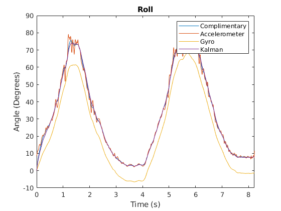
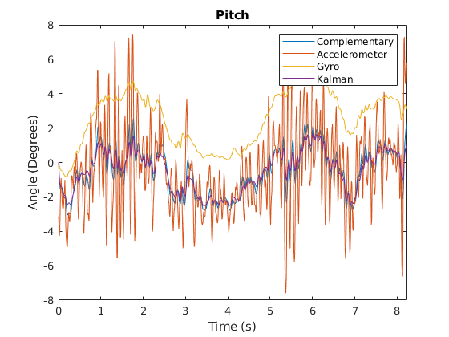

Comparison of four different types of filters to find orientation
In this tutorial, we will learn how to calculate the orientation of our mobile phone by using 4 different filters.
Contents
Read log data
First, we read out log file and store the variables in Matlab workspace
read_log_script % On the workspace window, you will see gyro_ts and acc_ts. Those are the % timeseries (a time-related version of arrays). Those two variables will % be our main data sets.
Data from sensorLog_2pitch.txtsaved
Extract out numerical entries of data into an array
Gx = gyro_ts.Data(:,1); Gy = gyro_ts.Data(:,2); Gz = gyro_ts.Data(:,3); Ax = acc_ts.Data(:,1); Ay = acc_ts.Data(:,2); Az = acc_ts.Data(:,3); % Our mobile app logs the data in each 10ms. dt = 0.01; % Our data lenght is the shortest data set either accelerometer or % gyroscope. number_of_data = min(length(gyro_ts.Data),length(acc_ts.Data));
1) Accelerometer only
This method is also known as tilt calculation. We make this calculation based on the gravity vector and its components on each accelerometer axes. This technique is only applicable where the linear acceleration of the body is very low.
phi_hat_acc = atan2(Ay, sqrt(Ax .^ 2 + Az .^ 2)); theta_hat_acc = atan2(-Ax, sqrt(Ay .^ 2 + Az .^ 2));
2) Gyroscope only
This method is based on integration the velocity to find the position as we all do in highschool. It works okay for short time frames. However, in longer period there will be accumulation during the integration process - which is also known as drift error.
phi_hat_gyr = zeros(1, length(gyro_ts)); theta_hat_gyr = zeros(1, length(gyro_ts)); for i = 2:number_of_data p = Gx(i); q = Gy(i); r = Gz(i); phi_hat = phi_hat_gyr(i - 1); theta_hat = theta_hat_gyr(i - 1); phi_hat_gyr(i) = phi_hat + dt * (p + sin(phi_hat) * tan(theta_hat) * q + cos(phi_hat) * tan(theta_hat) * r); theta_hat_gyr(i) = theta_hat + dt * (cos(phi_hat) * q - sin(phi_hat) * r); end
3) Complimentary Filter
Complementary filter is a combination of a low-pass and a high-pass filter. Idea behind complementary filter is to take slow moving signals from accelerometer and fast moving signals from a gyroscope and combine them. Accelerometer gives a good indicator of orientation in static conditions. Gyroscope gives a good indicator of tilt in dynamic conditions.
% alpha value is related the cut-off frequency of the filters. alpha = 0.1; phi_hat_complimentary = zeros(1, length(gyro_ts)); theta_hat_complimentary = zeros(1, length(gyro_ts)); for i=2:number_of_data p = Gx(i); q = Gy(i); r = Gz(i); phi_hat = phi_hat_complimentary(i - 1); theta_hat = theta_hat_complimentary(i - 1); phi_hat_gyr_comp = phi_hat + dt * (p + sin(phi_hat) * tan(theta_hat) * q + cos(phi_hat) * tan(theta_hat) * r); theta_hat_gyr_comp = theta_hat + dt * (cos(phi_hat) * q - sin(phi_hat) * r); phi_hat_complimentary(i) = (1 - alpha) * phi_hat_gyr_comp + alpha * phi_hat_acc(i); theta_hat_complimentary(i) = (1 - alpha) * theta_hat_gyr_comp + alpha * theta_hat_acc(i); end
4) Kalman Filter
Kalman filter is an estimater (and observer). Using the system model, it reduces the estimation error in every iteration. It consists two parts; prediction and correction.
A = [1 -dt 0 0; 0 1 0 0; 0 0 1 -dt; 0 0 0 1]; B = [dt 0 0 0; 0 0 dt 0]'; C = [1 0 0 0; 0 0 1 0]; P = eye(4); Q = eye(4) * 0.01; R = eye(2) * 10; state_estimate = [0 0 0 0]'; phi_hat_kalman = zeros(1, number_of_data); bias_phi_kalman = zeros(1, number_of_data); theta_hat_kalman = zeros(1, number_of_data); bias_theta_kalman = zeros(1, number_of_data); for i=2:number_of_data p = Gx(i); q = Gy(i); r = Gz(i); phi_hat = phi_hat_kalman(i - 1); theta_hat = theta_hat_kalman(i - 1); phi_dot = p + sin(phi_hat) * tan(theta_hat) * q + cos(phi_hat) * tan(theta_hat) * r; theta_dot = cos(phi_hat) * q - sin(phi_hat) * r; % Predict state_estimate = A * state_estimate + B * [phi_dot, theta_dot]'; P = A * P * A' + Q; % Update (Correct) measurement = [phi_hat_acc(i) theta_hat_acc(i)]'; y_tilde = measurement - C * state_estimate; S = R + C * P * C'; K = P * C' * (S^-1); state_estimate = state_estimate + K * y_tilde; P = (eye(4) - K * C) * P; phi_hat_kalman(i) = state_estimate(1); bias_phi_kalman(i) = state_estimate(2); theta_hat_kalman(i) = state_estimate(3); bias_theta_kalman(i) = state_estimate(4); end
Convert all estimates to degrees
phi_hat_acc = phi_hat_acc * 180.0 / pi; theta_hat_acc = theta_hat_acc * 180.0 / pi; phi_hat_gyr = phi_hat_gyr * 180.0 / pi; theta_hat_gyr = theta_hat_gyr * 180.0 / pi; phi_hat_complimentary = phi_hat_complimentary * 180.0 / pi; theta_hat_complimentary = theta_hat_complimentary * 180.0 / pi; phi_hat_kalman = phi_hat_kalman * 180.0 / pi; theta_hat_kalman = theta_hat_kalman * 180.0 / pi;
Plots
t = acc_ts.Time; plot(t, phi_hat_complimentary); hold on; plot(t, phi_hat_acc); plot(t, phi_hat_gyr); plot(t, phi_hat_kalman); legend('Complimentary', 'Accelerometer', 'Gyro', 'Kalman'); xlabel('Time (s)'); ylabel('Angle (Degrees)'); title('Roll'); xlim([0 t(end)]) figure(2); plot(t, theta_hat_complimentary); hold on; plot(t, theta_hat_acc); plot(t, theta_hat_gyr); plot(t, theta_hat_kalman); legend('Complementary', 'Accelerometer', 'Gyro', 'Kalman'); xlabel('Time (s)'); ylabel('Angle (Degrees)'); title('Pitch'); xlim([0 t(end)]) 